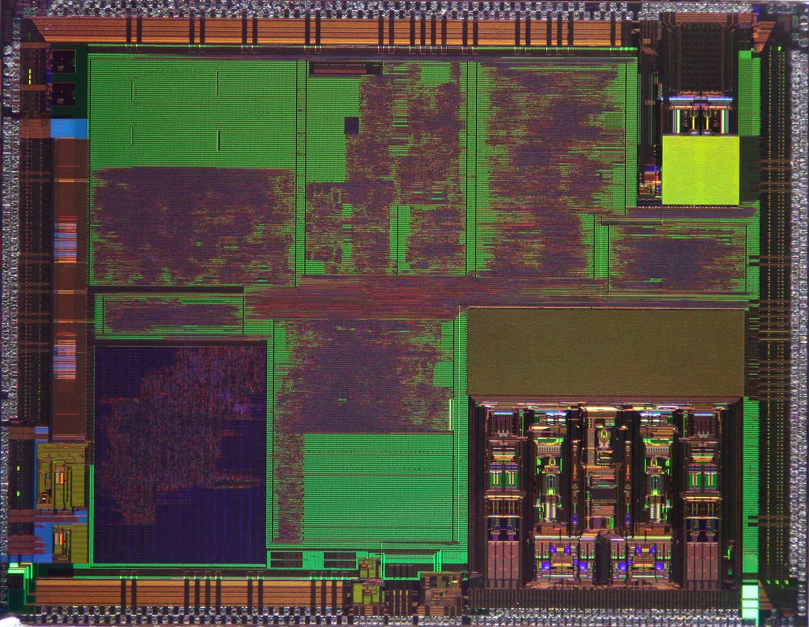

맞춤형 칩은 긴 계약입니다

브로드컴의 AI 이야기는 범용 그래픽처리장치와 다릅니다. 대형 클라우드 기업이 자신들의 모델과 데이터센터 구조에 맞춘 맞춤형 가속기를 만들 때 브로드컴이 설계와 네트워킹, 패키징 생태계를 연결합니다. 이 사업은 한 번 팔고 끝나는 부품보다 고객과 긴 시간표를 공유하는 프로젝트에 가깝습니다.
맞춤형 ASIC은 고객에게 비용과 전력 효율을 줄일 수 있는 기회를 줍니다. 그러나 설계가 성공하려면 소프트웨어, 메모리, 네트워킹, 제조 수율이 함께 맞아야 합니다. 브로드컴의 강점은 칩 하나보다 대형 고객의 복잡한 시스템을 양산 가능한 형태로 묶는 데 있습니다.
투자자가 볼 지점은 수주 발표의 크기만이 아닙니다. 해당 고객이 몇 년 동안 물량을 유지할지, 설계 변경이 얼마나 자주 생기는지, 공급망 병목이 없는지 확인해야 합니다. 맞춤형 칩은 성공하면 끈끈하지만 실패하면 전환 비용도 큽니다.
고객 집중은 양날입니다
브로드컴의 AI 반도체 매출은 소수 대형 고객에 크게 기대는 구조일 가능성이 큽니다. 이는 장점이자 위험입니다. 대형 고객은 물량이 크고 계약 기간이 길어 매출 가시성을 높입니다. 반면 한 고객의 투자 계획이 바뀌면 분기 실적과 시장 기대가 크게 흔들릴 수 있습니다.
대형 클라우드 기업은 자체 칩을 원하지만 완전히 혼자 만들기는 어렵습니다. 그래서 브로드컴 같은 파트너가 필요합니다. 다만 고객이 내부 역량을 키우거나 다른 파운드리·설계 파트너를 병행하면 협상력은 달라집니다. 고객 집중은 높은 진입장벽과 높은 의존을 동시에 의미합니다.
실적 발표에서 확인할 표현은 신규 고객 수, 기존 고객의 다음 세대 설계, AI 네트워킹 매출, 공급 가능 물량입니다. 단순히 AI 매출이 늘었다는 문장보다 고객 기반이 넓어지는지가 더 중요합니다.
네트워킹이 마진을 지킵니다
AI 데이터센터에서는 가속기만큼 네트워킹이 중요합니다. 수많은 칩이 함께 학습하고 추론하려면 스위치, 광연결, 고속 인터페이스가 병목 없이 움직여야 합니다. 브로드컴은 이 영역에서 강한 제품군을 갖고 있어 AI ASIC 성장의 주변 매출도 함께 기대할 수 있습니다.
마진을 볼 때는 반도체와 소프트웨어를 나눠 봐야 합니다. 브로드컴은 인프라 소프트웨어 사업도 갖고 있어 전체 이익률을 안정시키는 역할을 합니다. 그러나 AI 반도체 투자가 커지면 연구개발비와 공급망 비용도 늘어날 수 있습니다. 매출 성장과 이익률이 같은 방향인지 확인해야 합니다.
맞춤형 칩은 가격 경쟁보다 성능과 신뢰성이 중요하지만, 고객이 초대형 기업이면 협상력도 큽니다. 브로드컴이 높은 마진을 유지하려면 기술 우위와 공급 안정성을 계속 증명해야 합니다.
주가는 기대를 먼저 먹었습니다
브로드컴 주가는 AI 인프라 기대를 상당 부분 반영해 움직일 수 있습니다. 좋은 회사와 좋은 주식은 항상 같은 말이 아닙니다. 투자자는 매출 성장률만 보지 말고 주가가 어떤 성장 속도를 이미 가격에 넣었는지 확인해야 합니다.
확인할 숫자는 AI 반도체 매출, 다음 분기 가이던스, 주요 고객 확대, 총마진, 재고, 현금흐름, 부채 부담입니다. 특히 대형 인수 이후 소프트웨어 사업의 현금창출력이 반도체 투자와 주주환원 사이에서 어떤 균형을 만드는지 봐야 합니다.
브로드컴의 핵심 질문은 AI ASIC 시장이 커지느냐가 아니라 그 성장의 상당 부분을 얼마나 오래 가져갈 수 있느냐입니다. 고객이 늘고 네트워킹 매출이 함께 붙으면 강한 흐름이 이어질 수 있습니다. 반대로 고객 집중이 심해지면 좋은 실적 뒤에도 할인 요인이 남습니다.
관련 영상
ASIC 시장 주도하며 상승 날개 단 브로드컴과 마벨
브로드컴은 AI 인프라의 조용한 핵심 공급자에 가깝습니다. 하지만 투자 판단은 성장 이야기보다 고객 집중과 계약 지속성에서 갈립니다. 숫자가 좋아도 그 숫자가 몇 고객에게서 나왔는지, 다음 세대 설계까지 이어지는지 함께 봐야 합니다.
브로드컴 주식은 AI ASIC 성장보다 고객 집중과 공급 계약을 봐야 합니다을 볼 때는 발표 직후의 반응보다 다음 분기까지 이어지는 숫자를 함께 확인하는 편이 좋습니다. 단기 뉴스는 방향을 빠르게 바꾸지만 실제 변화는 계약, 예산, 생산, 소비 습관처럼 느린 항목에서 굳어집니다. 이 차이를 나누어 보면 과장된 기대와 실제 지속 가능성을 구분할 수 있습니다.
가장 실용적인 점검 방법은 한 가지 지표에 기대지 않는 것입니다. 가격, 수요, 비용, 규제, 실행 시간이 같은 방향으로 움직이는지 확인해야 합니다. 어느 하나만 좋아도 나머지가 따라오지 않으면 결과는 늦어지고, 여러 조건이 동시에 맞으면 변화는 예상보다 빠르게 확산될 수 있습니다.
이 주제는 한 번의 결론보다 관찰 순서가 더 중요합니다. 먼저 현재 병목을 확인하고, 그다음 누가 비용을 부담하는지 보며, 마지막으로 그 부담이 가격이나 행동 변화로 이어지는지 봐야 합니다. 그렇게 읽으면 제목보다 구조가 먼저 보입니다.
브로드컴 주식은 AI ASIC 성장보다 고객 집중과 공급 계약을 봐야 합니다을 볼 때는 발표 직후의 반응보다 다음 분기까지 이어지는 숫자를 함께 확인하는 편이 좋습니다. 단기 뉴스는 방향을 빠르게 바꾸지만 실제 변화는 계약, 예산, 생산, 소비 습관처럼 느린 항목에서 굳어집니다. 이 차이를 나누어 보면 과장된 기대와 실제 지속 가능성을 구분할 수 있습니다.
가장 실용적인 점검 방법은 한 가지 지표에 기대지 않는 것입니다. 가격, 수요, 비용, 규제, 실행 시간이 같은 방향으로 움직이는지 확인해야 합니다. 어느 하나만 좋아도 나머지가 따라오지 않으면 결과는 늦어지고, 여러 조건이 동시에 맞으면 변화는 예상보다 빠르게 확산될 수 있습니다.
이 주제는 한 번의 결론보다 관찰 순서가 더 중요합니다. 먼저 현재 병목을 확인하고, 그다음 누가 비용을 부담하는지 보며, 마지막으로 그 부담이 가격이나 행동 변화로 이어지는지 봐야 합니다. 그렇게 읽으면 제목보다 구조가 먼저 보입니다.
브로드컴 주식은 AI ASIC 성장보다 고객 집중과 공급 계약을 봐야 합니다을 볼 때는 발표 직후의 반응보다 다음 분기까지 이어지는 숫자를 함께 확인하는 편이 좋습니다. 단기 뉴스는 방향을 빠르게 바꾸지만 실제 변화는 계약, 예산, 생산, 소비 습관처럼 느린 항목에서 굳어집니다. 이 차이를 나누어 보면 과장된 기대와 실제 지속 가능성을 구분할 수 있습니다.